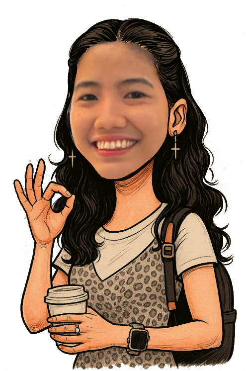
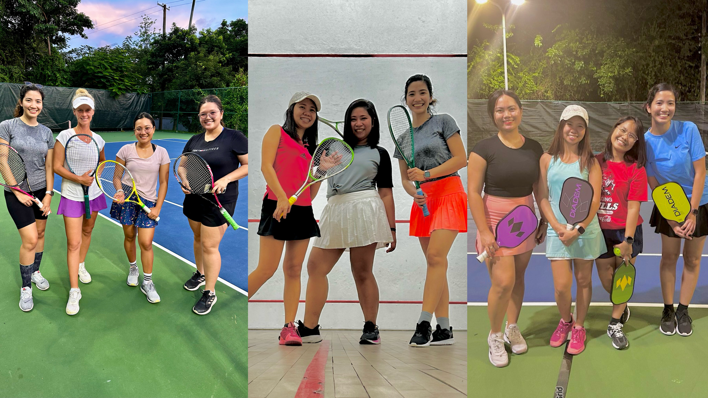
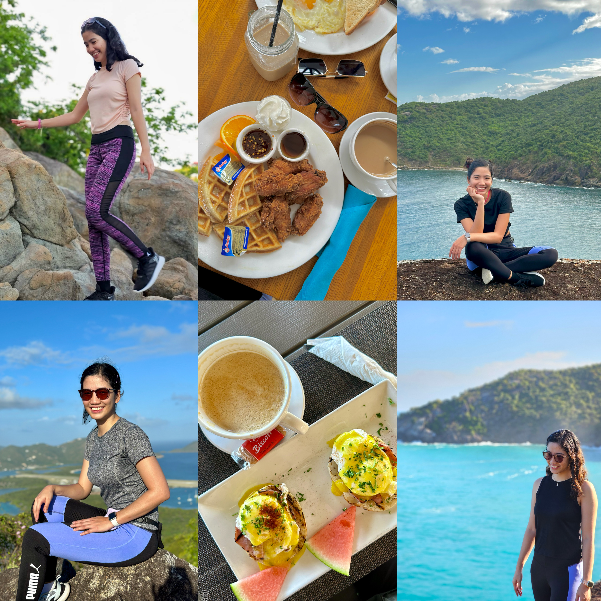
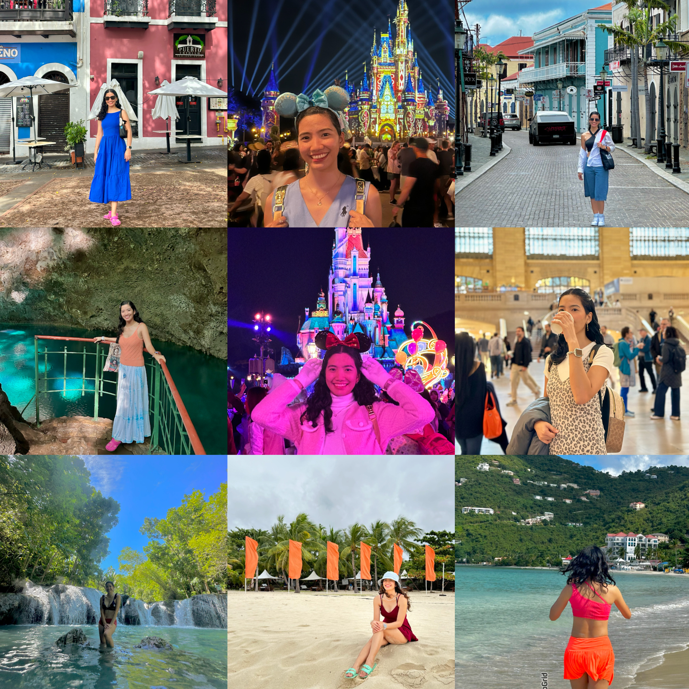
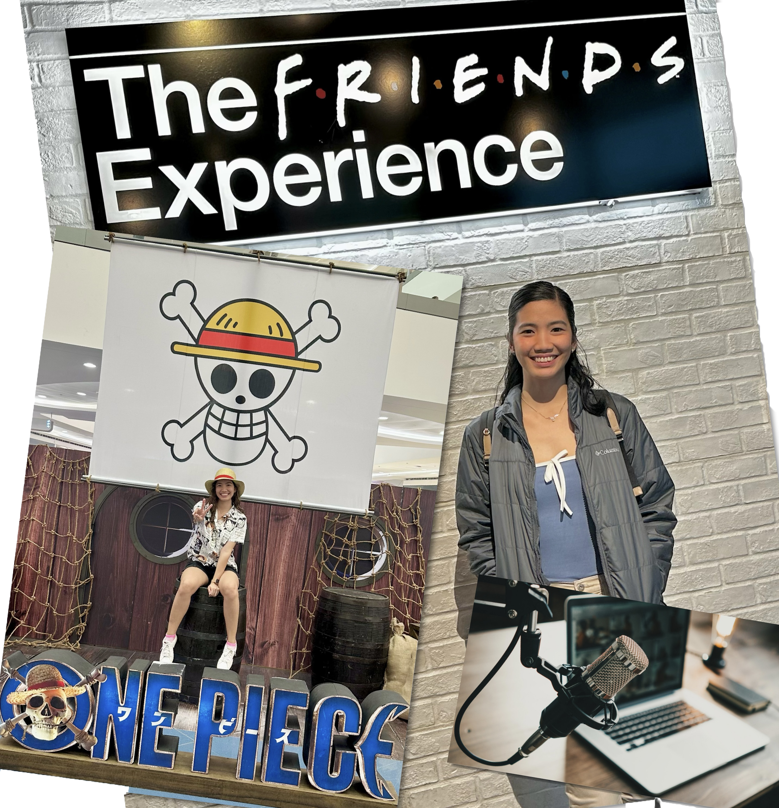

Meet the Adventurer

An INFJ‑A accountant with a secret double life as an adventure seeker.
Currently living in the British Virgin Islands, I’m a full‑time island girl and a part‑time thrill seeker.
New places? Absolutely. Best-seller food? Give it to me! Random hobbies I’ll probably obsess over for a week? Count me in.
Café hopping is basically my sport—especially the cozy specialty spots. I’m always hunting for the best brews (oat latte supremacy forever!) and unique house‑only flavors you can’t get anywhere else.
Exploring is my love language, and I refuse to let a year pass without hopping on a plane or discovering a new corner of the world. Get to know me more by exploring this page! :)
Hobbies & Interests
Sports

Since living in the island, I now have more time to indulge to any sports available. In a week, I’m able to play 3 sports. The island is just small where places are just 10-15mins away making it easy to go from home or work straight to the courts.
Hiking + Coffee

I hike with friends from time to time exploring different mountains or hills in the island. I have always been a mountain girl rather than a beach girl. The feeling of standing on top of a mountain making all those below tiny makes my heart jump. It’s the kind of rush leaving me in awe of the beauty of God’s creation and how things can be small or big based on different perspectives. This applies to life in general, to not be overwhelmed by life’s challenges, and overcome it one step at a time.
Travels

I love love looooove travelling! It’s the one thing that makes me feel most alive.
Series/Podcasts

Watching series/ podcasts is my break from all work or school deadlines. It diverts my mind into thinking other things, specifically the stories behind, that would make my mind rest from all tasks or to do’s.
I have natural curls. Been taking care of it since 2018 doing the Curly Girl Method (CGM). So here's a video of me flaunting it!